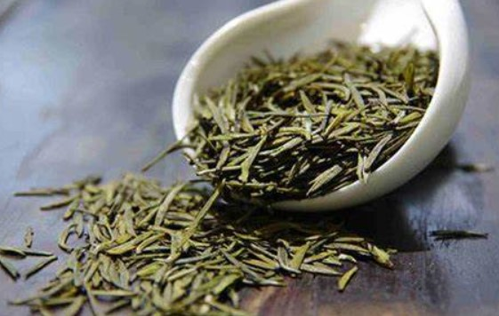
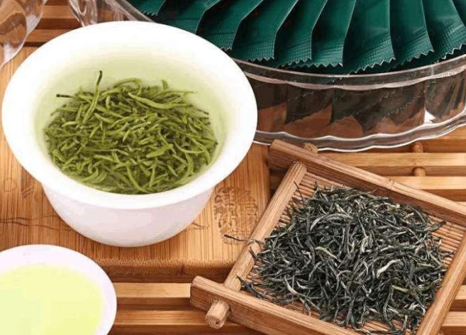
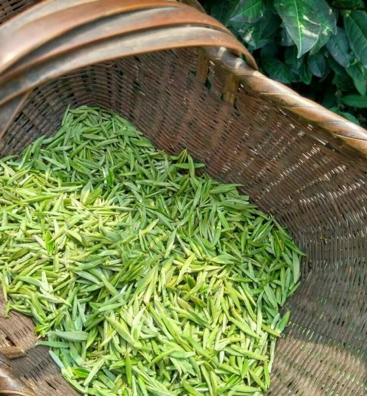
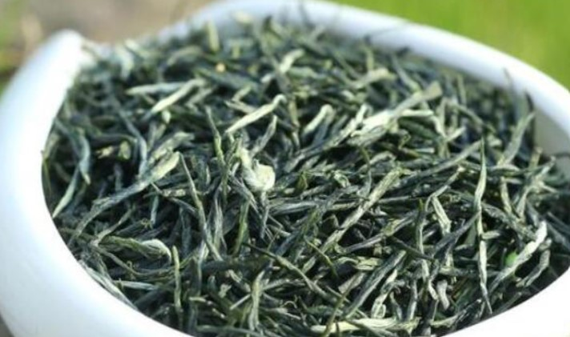
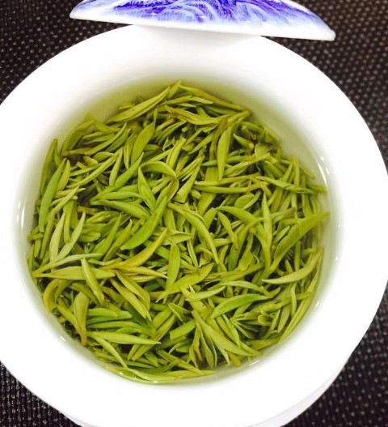
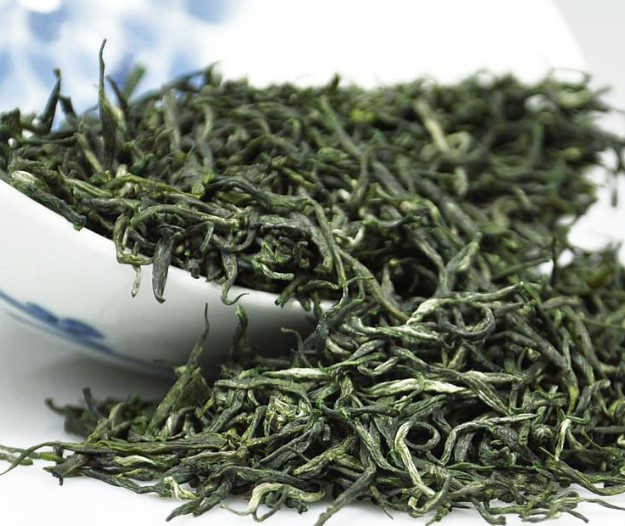
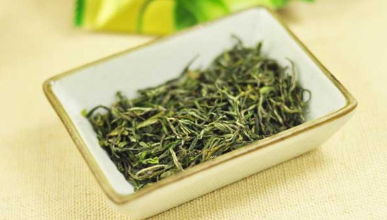
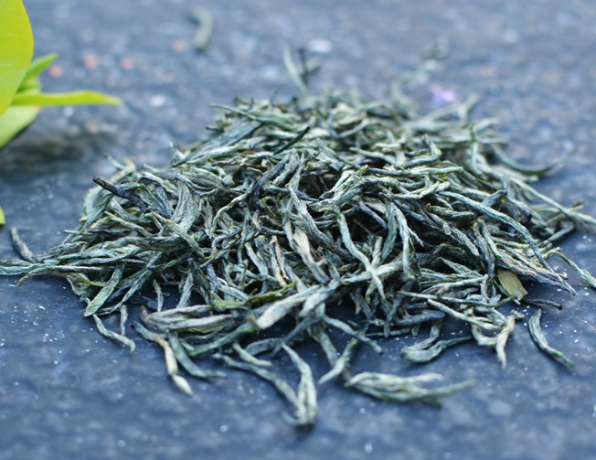

北港毛尖
北港毛尖以注册商标“北港”命名，唐代称“邕（yōng）湖茶”，属黄茶类，产于湖南省岳阳市北港。在加工技术中，通过热闷措施的摧化作用，破坏叶绿素，使不溶性碳水化合物部分转化成可溶性，儿茶素类发生非酶性氧化和异构化作用，其转化产物与蛋白质水解的氨基酸结合，产生新的香味物质，达到茶叶黄化，香味鲜醇回甘。
自然地理
北港发源于梅溪，全长2千米左右，因位于南港之北而得名。南港、北港汇合于乔湖，湖边五座塘庙，庙前有一湖，现名杨家湖，也就是淄湖。岳阳市康王乡北港缱湖一带，是现今的北港毛尖产地。这里气候温和，雨量充沛，每初早春清晨，绐湖水面蒸气冉冉上升，低空缭绕，经微风吹拂，如轻纱薄雾尽散于北岸的茶园上空。茶园地势平坦，水陆交错，土质肥沃，酸度适宜。
品质特征
外形芽壮叶肥，毫尖显露，呈金黄色；内质香气清高，汤色橙黄，滋味醇厚，叶底肥嫩黄似朵。
甘露在梵语是“念祖”之意；二说是茶汤似甘露。甘露茶采摘细嫩，制工精湛，外形美观，内质优异。其品质特点：紧卷多毫，浅绿油润，叶嫩芽壮，芽叶纯整，汤黄微碧，清澈明亮，香馨高爽，味醇甘鲜。
加工工序
1.采摘：清明后5～6天开采，一芽二三叶标准，抢晴天采，不采虫伤叶，不采紫色叶，不采鱼叶，不带蒂把，当日采摘当日制。
2.杀青：俗称锅炒。北港毛尖的杀青颇别致，与一般绿茶和黄茶杀青极不一样。北港北毛尖采用高温投叶，中温长炒老杀的方法。杀青要求锅温200℃以上，投叶2 000克抖炒2分钟后即降温至100℃左右，再炒12～13分钟，茶坯达三四成千时，锅温已逐步降至40℃左右，即转入锅揉。在较长时间的锅炒中，由于茶叶含水量较高，叶绿素破坏相当严重的，为黄茶要求的特有品质奠定了基础。
3.锅揉：杀青后并不出锅，在锅温40℃左右，茶叶含水率为55%左右时转入锅揉，即在锅中边揉边炒。间以解块操作。待茶叶成条索状时，即出锅拍汗。
4.拍汗：所谓拍汗，即将茶坯盛篾簸内，堆积拍紧，上覆棉套，以保温保湿。闷渥30～40分钟，使茶叶回润变黄。
5.复炒复揉：经过拍汗后，将茶坯再投入锅中复炒。锅温60--70℃，边炒边揉，至茶条紧卷，白毫显露，约八成干时出锅摊晾。
6.烘干：摊晾后用炭火烘干。茶叶烘干后必须摊晾，再装箱内严封，使之后熟。经过后熟，芽叶色泽金黄泽润，便成了质优形美的北港毛尖。
品茗指南
冲泡准备
铁制火炉一具，铜质烧壶一把，长方形紫檀木茶盘一个，长方形木制托盘一个，青瓷茶碗若干个（可用三才盖碗杯），陶质茶罐一个，檀木茶道具一套，茶色茶巾一条，清花茶荷一个，彩瓷花瓶一个、栀子花一枝，香炉一个，香三支，北港毛尖茶若干克。
冲泡方法
第一道：煮水——邕湖荷露煮含膏
茶者在沏茶前，首先择具备器、挂画、插花、奏乐、焚香静气，神入茶径，然后开始生火煮水。“水为茶之母，茶为水之魂”。烹茶鉴水，乃中国茶道之特色。古人把宜茶之水分为天水、地水，天水即雨、雪、霜、露、雹；地水乃泉、江、河、湖、井。更有趣者，如扫梅花雪、聚腊月霜，集荷叶露，解严冬冰，借清纯之水，发茶人清幽之思。今天我们所烹之水乃北港邕湖荷花晨露，有诗为证：轻纱薄雾锁池塘，滴滴水晶吻异香。集得青荷冰露洁，含膏共煮洗俗肠。
第二道：涤器——青瓷茶碗岳州窑
岳州乃岳阳之古称：唐代不仅有邕湖含膏之名茶，岳州茶具也享有盛名。岳州窑乃全国六大名窑之一，陆羽茶经：四之器》中载：“碗，越州上，鼎州、婺州次，岳州上，寿州、洪州次，越州瓷、岳瓷皆青，青则益茶。”还载有品茶用具二十四件，并提出：“城邑之中，王公之门，二十四器缺一，则茶废矣。”今天我们使用的泡茶之器，乃岳州窑所产的青瓷茶碗，正是名茶用名器，相得益彰。
第三道：赏茶——茶伴公主入青藏
唐代邕湖茶，不仅深受宫庭廷青睐，并为汉藏文化交流之媒介。当年文成公主出嫁西藏，所带物品中的茶叶，就有岳阳名茶——邕湖含膏。并把饮茶习俗传到西藏，茶与佛教融合，布道弘法，形成了西藏喇嘛寺中空前规模的茶之盛会。北港毛尖，芽壮叶肥，毫尖显露，色呈金黄，我们将茶叶给客人一一观赏，恰似茶伴公主入青藏。
第四道：投茶——燕飞寻常百姓家
北港毛尖，昔为皇宫贡品，今为百姓共享。投茶入杯时，茶芽纷纷飘落，恰似紫燕纷飞，正是：旧时王谢堂前燕，飞入寻常百姓家。
第五道：洗茶——横空一鹤排云上
洗茶时：眼观流水，心注于茶，人茶合一，茶心共洗。茶尘涤尽，心烦同失。茶芽舒卷，心襟同阔。杯上白鹤，心与共翔。顷刻大有唐代诗人刘禹锡《秋词》一诗共感：自古逢秋悲寂寞，我言秋日胜春朝。横空一鹤排云上，便引诗情到碧宵。
第六道：泡茶——水润北港瑞草黄
茶以名山秀水为宅，钟山川之灵秀，以清风明月为伴，得天地之精和，以人类为友，得人之灵性，天、地、人三才共同化育出茶之精华，可谓仙草琼浆。北港毛尖，宜用90℃沸水冲泡。泡茶时，水入茶碗，芽叶舒卷，黄汤四溢，正是水润北港瑞草黄。
第七道：敬茶——邕湖含膏惟上贡
茶汤泡好后，将茶一一敬奉给客人，各位将一览名茶风雅，一饱皇家口福。有唐代诗僧齐已《谢人惠邕湖茶》一诗为证：邕湖惟上贡，何以惠寻常。还是诗心苦，堪消蜡面香。碾声通一室，烹色带残阳。若有新春者，西来信勿忘。
第八道：闻香——亦有灵源一派香
北港毛尖产地，茶园地势平坦，水陆交错，土质肥沃，酸度适宜，正是宜茶之地。其茶香气清高，有宋代大儒朱熹《咏茶》 一诗为感：小小茶树数千章，走寄萌芽初得尝。虽无山顶烟岗润，亦有灵源一派香。
第九道：品茶——涤烦解渴心神悦
文成公主出嫁西藏想念家乡，常要大唐使者带去茶叶，并和松赞干布举杯共饮。
《唐国史补》中载：“常鲁公使西蕃，烹茶帐中，赞普问曰：‘此为何物？’鲁公曰‘涤烦解渴，所谓茶也’。赞普曰：‘我此亦有’。遂命出之，以指曰……此邕湖者。”北港毛尖，滋味醇厚，品后神清气爽，愁烦顿失。有朱熹《茶宴、论茗》一诗为感：茗饮沦甘寒，抖擞神气增。顿生尘虑空，豁然悦心目。
第十道：醉茶——夜归踏碎满街月
“醉翁之意不在酒，在乎山水之间。”品茶之韵不在茶，在乎清雅之境。有道是：“有韵则雅，韵致清远。”茶致数巡，身舒神悦，乐哉！悠哉！似醉非醉。至此，大有宋代诗人黄庭坚《一斛珠》一词共感：香芽嫩茶清心骨，醉中襟量与天阔。夜阑似觉归仙阙。走马章台，踏碎满街月。
选购技巧
看色泽
新茶色泽一般都较清新悦目，或嫩绿或墨绿。绿茶以颜色翠碧，鲜润活气为好；炒青茶色泽灰绿，略带光泽。若干茶叶色泽发枯发暗发褐，表明茶叶内质有不同程度的氧化，这种茶往往是陈茶；如果茶叶片上有明显的焦点、泡点(为黑色或深酱色斑点)或叶边缘为焦边，说明不好，不是好茶；若茶叶色泽花杂，颜色深浅反差较大，说明茶叶中夹有黄片，老叶甚至有陈茶，这样的茶也谈不上是好茶。
观外形
各种茶叶都有特定的外形特征。一般说新茶外形：条索明亮，大小、粗细、长短均匀者为上品；条索枯暗、外形不整、甚至有茶梗、茶籽者为下品。细实、芽头多、锋苗锐利的嫩度高；粗松、老叶多、叶肪隆起的嫩度低。扁形茶以平扁光滑者为好，粗、枯、短者为次；条形茶以条索紧细、圆直、匀齐者为好，粗糙、扭曲、短碎者为次；颗粒茶以圆满结实者为好，松散块者为次,来试试吧。
闻香气
新茶一般都有新茶香。好的新茶，茶香格外明显。
品茶味
茶汤入口后甘鲜，浓醇爽口，在口中留有甘味者最好；通常取少量样品冲泡观察，好的茶，汤色明澄，茶叶先若涩，后浓香甘醇，而且带有板栗香味。
捏干湿
用手指捏一捏茶叶，可以判断新茶的干湿程度。新茶要耐贮存，必须要足干。受潮的茶叶含水量都较高，不仅会严重影响茶水的色、香、味、而且易发霉变质。判断新茶足不足干，可取一二片茶叶用大拇指和食指稍微用劲捏一捏，能捏成粉末的是足干的茶叶，可以买；若捏不成粉末状，说明茶叶已受潮，含水量较高，这种新茶容易变质，不宜购买。
存储方法
普通密封保鲜法
将买回的茶叶，立即分成若干小包，装于茶叶罐或筒里，最好一次装满并盖上盖，在不用时不要打开，用完把盖盖严。有条件可在茶叶罐内适当放些用布袋装好的生石灰，以起到吸潮和保鲜作用。
真空抽气充氮法
将茶叶装入铝箔与塑料做成的复合袋，采取一次性封闭真空抽气充氮包装贮存，也可适当加入些保鲜剂。一经启封后，最好在短时间内用完，否则时间一长，同样会陈化劣变。
普通密封保鲜法
这种大量保鲜贮存法不加任何保鲜剂，纯属物理保鲜，只要库房建筑合理，库温保持在－4℃至2℃不变即可。但茶叶出库前必须要经过真空保鲜处理，否则，茶叶暴露空气中，由于外界冷热相遇，水分和氧气会形成水汽珠而凝结在茶叶上，加速茶叶劣变。